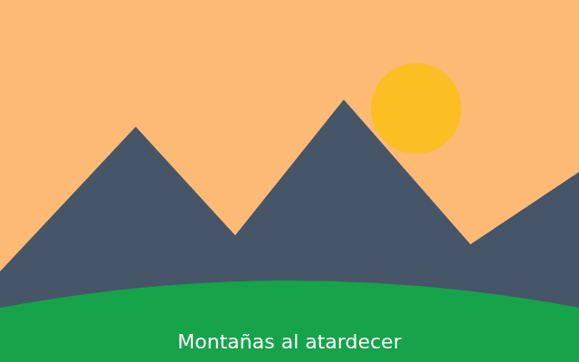

Montañas al atardecer
Cuando la luz entra por una ventana grande, la piel se ve suave y los colores quedan fieles. Por eso, siempre que puedo, hago mis retratos a media mañana, con la cara hacia la ventana y sin flash. Una cortina blanca fina funciona como un difusor.